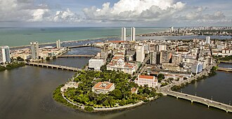

Recife é uma cidade encantadora, marcada por uma rica história, cultura vibrante e belas paisagens. Conhecida como a Veneza Brasileira, encanta visitantes com suas pontes, rios, praias e construções históricas. Um destino que une tradição, beleza e turismo.
A capital pernambucana é um verdadeiro convite à descoberta, com atrações como o Recife Antigo, o Marco Zero e o famoso bairro de Boa Viagem. Sua gastronomia regional, suas manifestações culturais e sua arquitetura histórica revelam a riqueza de um povo acolhedor e apaixonado por suas tradições.
